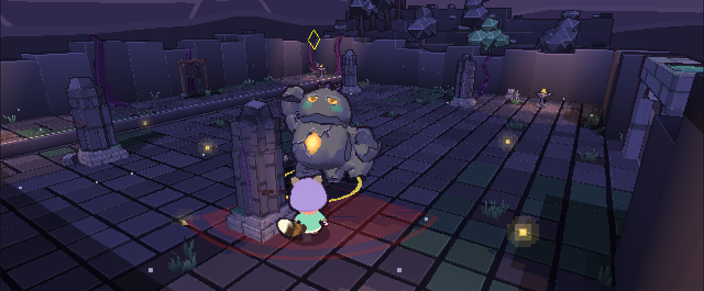
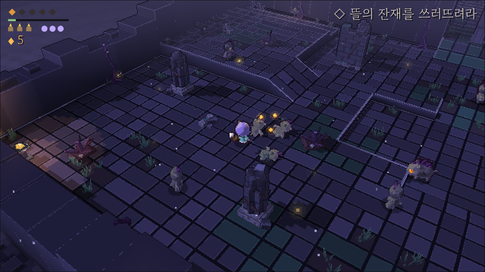
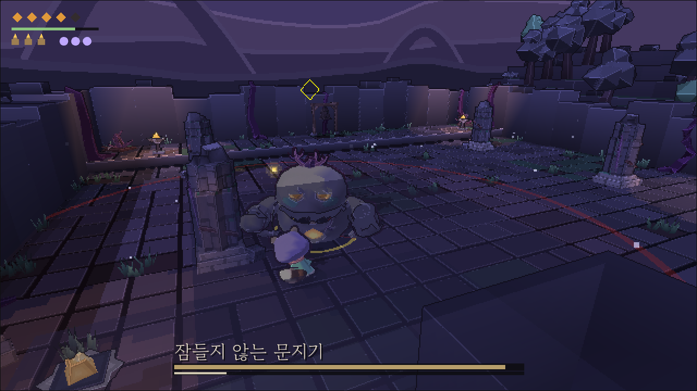

개발 중 로우폴리 3D 액션 RPG
Knellroot 넬루트
땅 밑에서 종이 울린다. 아무도 치지 않는 종이.
뿌리가 닿은 곳마다, 죽은 것이 일어선다.
두건 쓴 작은 너구리 방랑자가 그 종소리를 따라 내려간다.
두 시점, 한 싸움
떼는 쿼터뷰로 쓸어 넘기고, 길을 막는 문지기에게 락온을 거는 순간 카메라가 어깨 너머로 내려간다. 예고를 읽고, 피하고, 받아치고, 빈틈을 친다.


해 보기
아직 만드는 중입니다. 지금은 첫 구역 "침묵의 성소" 하나뿐이고, 판이 바뀔 때마다 손맛과 내용이 달라집니다. 해 보고 느낀 점을 알려 주시면 큰 도움이 됩니다.
만드는 곳
털보네공업사(Beardworks)가 혼자 만듭니다. 소스 코드는 GitHub에 공개되어 있습니다. 첫 게임 Naïl: Under the Roots와 같은 세계, 아주 먼 뒤의 이야기입니다.